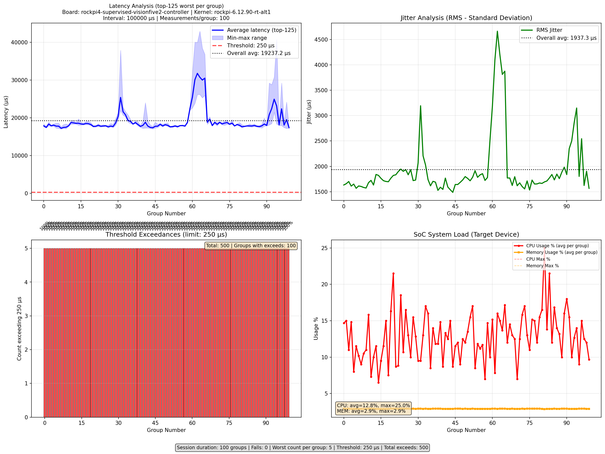
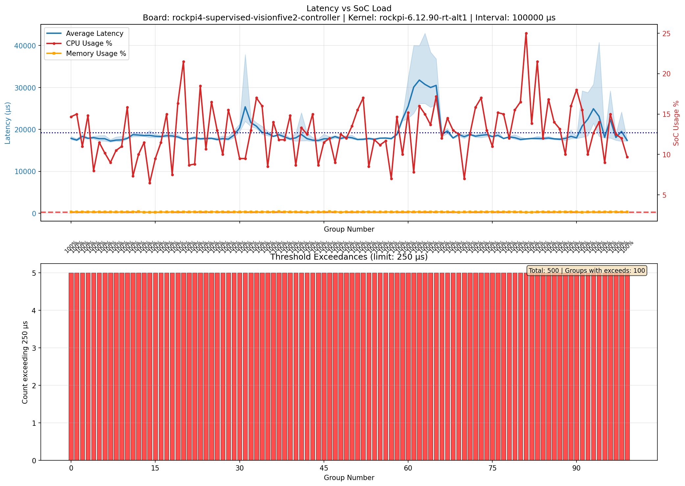
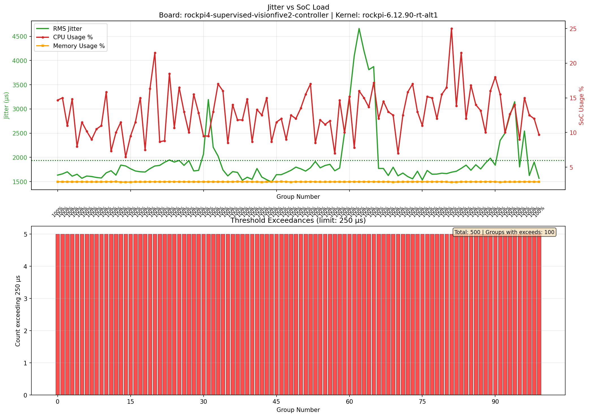
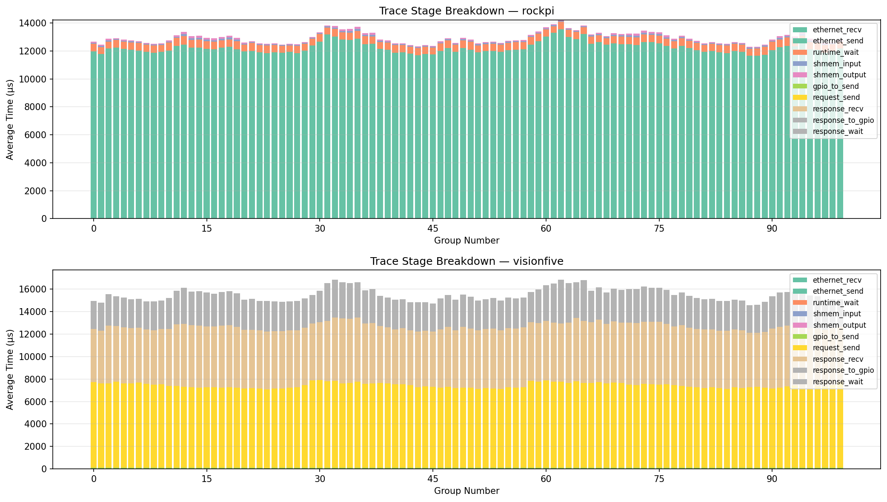
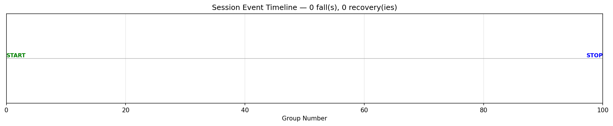

**Board:** rockpi4-supervised-visionfive2-controller
**Kernel:** rockpi-6.12.90-rt-alt1
**Stress:** ON
**Payload:** ON
**Interval:** 100000 µs
**Measurements/group:** 100
**Worst count/group:** 5
| Metric | Value |
|---|
|---|---:|
| Groups | 100 |
|---|---|
| Average Jitter | 1937.3 µs |
| Falls | 0 |
| Min Latency (per-group avg) | 17228.8 µs |
| Max Latency (per-group avg) | 31776.8 µs |
| Overall Latency (global avg) | 19237.2 µs |
| Global Max Latency | 42948.0 µs |
| Metric | Value |
|---|
|---|---:|
| Threshold | 250 µs |
|---|---|
| Total exceeds | 500 |
| Groups with exceeds | 100 |
| Maximum exceed | 42948 µs |
| Metric | Value |
|---|
|---|---:|
| Average CPU | 12.8% |
|---|---|
| Max CPU | 25.0% |
| Average Memory | 2.9% |
| Max Memory | 2.9% |
- ✅ groups: 100 (0..99)
- ✅ latencies: 500
- ✅ trace: 1000 rows, 2 hosts, 10 stages
- ✅ events: {'start': 1, 'stop': 1}
- ✅ soc_metrics: 100 rows
- **rockpi**: 500 measurements
- **visionfive**: 500 measurements




